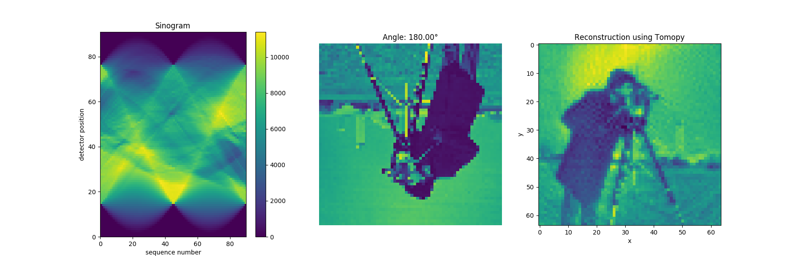

Note
Click here to download the full example code
Streaming Tomographic Reconstruction¶
Problem¶
Reconstruct a 2D cross-section of a sample from projections, as if it were rotated in place in front of a strip detector.
This example uses the library tomopy.
Approach¶
Create a simulated detector coupled to a simulated motor, standing in for the strip detector and the rotating sample holder. Scan the motor from zero to pi, and use tomopy to generate simulated projections of a sample at several angles. This provides our simulated dataset.
Now, use tomopy to reconstruct the sample “density” from these projections. To give tomopy live access to the data, wrap it in a class that acts as a bluesky callback, an interface between tomopy and bluesky’s document model.
Also make a callback for visualizing the projections side by side (a sinogram).
Example Solution¶
Out:
+-----------+------------+------------+----------------+
| seq_num | time | angle | angle_setpoint |
+-----------+------------+------------+----------------+
| 1 | 20:29:27.8 | 0.000 | 0.000 |
| 2 | 20:29:28.5 | 0.035 | 0.035 |
| 3 | 20:29:29.1 | 0.071 | 0.071 |
| 4 | 20:29:29.8 | 0.106 | 0.106 |
| 5 | 20:29:30.4 | 0.141 | 0.141 |
| 6 | 20:29:31.0 | 0.176 | 0.176 |
| 7 | 20:29:31.7 | 0.212 | 0.212 |
| 8 | 20:29:32.3 | 0.247 | 0.247 |
| 9 | 20:29:32.9 | 0.282 | 0.282 |
| 10 | 20:29:33.6 | 0.318 | 0.318 |
| 11 | 20:29:34.2 | 0.353 | 0.353 |
| 12 | 20:29:34.9 | 0.388 | 0.388 |
| 13 | 20:29:35.5 | 0.424 | 0.424 |
| 14 | 20:29:36.1 | 0.459 | 0.459 |
| 15 | 20:29:36.8 | 0.494 | 0.494 |
| 16 | 20:29:37.4 | 0.529 | 0.529 |
| 17 | 20:29:38.1 | 0.565 | 0.565 |
| 18 | 20:29:38.7 | 0.600 | 0.600 |
| 19 | 20:29:39.3 | 0.635 | 0.635 |
| 20 | 20:29:40.0 | 0.671 | 0.671 |
| 21 | 20:29:40.6 | 0.706 | 0.706 |
| 22 | 20:29:41.2 | 0.741 | 0.741 |
| 23 | 20:29:41.9 | 0.777 | 0.777 |
| 24 | 20:29:42.5 | 0.812 | 0.812 |
| 25 | 20:29:43.2 | 0.847 | 0.847 |
| 26 | 20:29:43.9 | 0.882 | 0.882 |
| 27 | 20:29:44.6 | 0.918 | 0.918 |
| 28 | 20:29:45.3 | 0.953 | 0.953 |
| 29 | 20:29:45.9 | 0.988 | 0.988 |
| 30 | 20:29:46.6 | 1.024 | 1.024 |
| 31 | 20:29:47.3 | 1.059 | 1.059 |
| 32 | 20:29:48.0 | 1.094 | 1.094 |
| 33 | 20:29:48.6 | 1.130 | 1.130 |
| 34 | 20:29:49.3 | 1.165 | 1.165 |
| 35 | 20:29:50.0 | 1.200 | 1.200 |
| 36 | 20:29:50.7 | 1.235 | 1.235 |
| 37 | 20:29:51.3 | 1.271 | 1.271 |
| 38 | 20:29:52.0 | 1.306 | 1.306 |
| 39 | 20:29:52.6 | 1.341 | 1.341 |
| 40 | 20:29:53.3 | 1.377 | 1.377 |
| 41 | 20:29:53.9 | 1.412 | 1.412 |
| 42 | 20:29:54.6 | 1.447 | 1.447 |
| 43 | 20:29:55.2 | 1.483 | 1.483 |
| 44 | 20:29:55.9 | 1.518 | 1.518 |
| 45 | 20:29:56.5 | 1.553 | 1.553 |
| 46 | 20:29:57.1 | 1.588 | 1.588 |
| 47 | 20:29:57.8 | 1.624 | 1.624 |
| 48 | 20:29:58.4 | 1.659 | 1.659 |
| 49 | 20:29:59.1 | 1.694 | 1.694 |
+-----------+------------+------------+----------------+
| seq_num | time | angle | angle_setpoint |
+-----------+------------+------------+----------------+
| 50 | 20:29:59.7 | 1.730 | 1.730 |
| 51 | 20:30:00.4 | 1.765 | 1.765 |
| 52 | 20:30:01.0 | 1.800 | 1.800 |
| 53 | 20:30:01.7 | 1.836 | 1.836 |
| 54 | 20:30:02.3 | 1.871 | 1.871 |
| 55 | 20:30:03.0 | 1.906 | 1.906 |
| 56 | 20:30:03.6 | 1.941 | 1.941 |
| 57 | 20:30:04.3 | 1.977 | 1.977 |
| 58 | 20:30:04.9 | 2.012 | 2.012 |
| 59 | 20:30:05.6 | 2.047 | 2.047 |
| 60 | 20:30:06.2 | 2.083 | 2.083 |
| 61 | 20:30:06.9 | 2.118 | 2.118 |
| 62 | 20:30:07.5 | 2.153 | 2.153 |
| 63 | 20:30:08.2 | 2.189 | 2.189 |
| 64 | 20:30:08.8 | 2.224 | 2.224 |
| 65 | 20:30:09.5 | 2.259 | 2.259 |
| 66 | 20:30:10.1 | 2.294 | 2.294 |
| 67 | 20:30:10.9 | 2.330 | 2.330 |
| 68 | 20:30:11.5 | 2.365 | 2.365 |
| 69 | 20:30:12.2 | 2.400 | 2.400 |
| 70 | 20:30:12.8 | 2.436 | 2.436 |
| 71 | 20:30:13.5 | 2.471 | 2.471 |
| 72 | 20:30:14.1 | 2.506 | 2.506 |
| 73 | 20:30:14.8 | 2.542 | 2.542 |
| 74 | 20:30:15.4 | 2.577 | 2.577 |
| 75 | 20:30:16.1 | 2.612 | 2.612 |
| 76 | 20:30:16.7 | 2.647 | 2.647 |
| 77 | 20:30:17.4 | 2.683 | 2.683 |
| 78 | 20:30:18.0 | 2.718 | 2.718 |
| 79 | 20:30:18.7 | 2.753 | 2.753 |
| 80 | 20:30:19.3 | 2.789 | 2.789 |
| 81 | 20:30:19.9 | 2.824 | 2.824 |
| 82 | 20:30:20.6 | 2.859 | 2.859 |
| 83 | 20:30:21.2 | 2.895 | 2.895 |
| 84 | 20:30:21.9 | 2.930 | 2.930 |
| 85 | 20:30:22.5 | 2.965 | 2.965 |
| 86 | 20:30:23.2 | 3.000 | 3.000 |
| 87 | 20:30:23.8 | 3.036 | 3.036 |
| 88 | 20:30:24.5 | 3.071 | 3.071 |
| 89 | 20:30:25.2 | 3.106 | 3.106 |
| 90 | 20:30:25.8 | 3.142 | 3.142 |
+-----------+------------+------------+----------------+
generator scan ['31d63365'] (scan num: 1)
import glob
import imageio
import skimage
import matplotlib.pyplot as plt
import numpy as np
import tomopy
import bluesky.plans as bp
from bluesky import RunEngine
from bluesky.callbacks import LiveTable, CallbackBase
from bluesky.utils import install_qt_kicker
from ophyd import Device, Signal, Component as Cpt
from ophyd.sim import SynAxis, NullStatus
L = 64
D = int(np.ceil(L * 2**0.5)) # diagonal
obj = tomopy.cameraman(L)
orig_obj = np.copy(obj)
# obj = tomopy.checkerboard(L)
# obj = tomopy.baboon(L)
# obj = tomopy.lena(L)
class TomoDet(Device):
image = Cpt(Signal)
def trigger(self):
super().trigger()
self.image.put(tomopy.project(obj, angle.read()['angle']['value']))
return NullStatus()
det = TomoDet(name='det')
angle = SynAxis(name='angle')
RE = RunEngine({})
# Do this if running the example interactively;
# skip it when building the documentation.
import os
if 'BUILDING_DOCS' not in os.environ:
from bluesky.utils import install_qt_kicker # for notebooks, qt -> nb
install_qt_kicker()
plt.ion()
angle._fake_sleep = 0.001 # simulate slow motor movement
class LiveRecon(CallbackBase):
SMALL = 1e-6
def __init__(self, name, x, y, ax=None, **recon_kwargs):
if ax is None:
ax = plt.gca()
ax.set_title('Reconstruction using Tomopy')
ax.set_xlabel('x')
ax.set_ylabel('y')
self.im = ax.imshow(np.zeros((y, x)), origin='upper')
recon_kwargs.setdefault('num_gridx', x)
recon_kwargs.setdefault('num_gridy', y)
self._name = name
self._x, self._y = x, y
self._recon_kwargs = recon_kwargs
def start(self, doc):
self._partial = self.SMALL * np.ones((self._y, self._x))
def event(self, doc):
data = doc['data'][self._name]
angle = doc['data']['angle']
self._partial = tomopy.recon(data, angle, **self._recon_kwargs,
init_recon=self._partial)
self.im.set_data(self._partial)
self.im.set_clim((np.min(self._partial), np.max(self._partial)))
self.im.figure.canvas.draw_idle()
class LiveSinogram(CallbackBase):
def __init__(self, name, width, ax=None):
if ax is None:
ax = plt.gca()
ax.set_title('Sinogram')
ax.set_xlabel('sequence number')
ax.set_ylabel('detector position')
self.im = ax.imshow(np.zeros((1, width)), aspect='auto')
ax.figure.colorbar(self.im, ax=ax)
self._name = name
self._width = width
def start(self, doc):
self._cache = []
def event(self, doc):
self._cache.append(doc['data'][self._name][0][0])
arr = np.asarray(self._cache)
self.im.set_data(arr.T)
self.im.set_extent((0, len(self._cache), 0, self._width))
self.im.set_clim((arr.min(), arr.max()))
self.im.figure.canvas.draw_idle()
class LiveRotation(CallbackBase):
def __init__(self, x, y, ax=None):
if ax is None:
ax = plt.gca()
ax.axis('off')
self.ax = ax
self.im = ax.imshow(np.zeros((y, x)), origin='upper')
self.im.set_clim((orig_obj[0].min(), orig_obj[0].max()))
def event(self, doc):
angle = doc['data']['angle'] * 180 / np.pi
self.ax.set_title(f'Angle: {angle:.2f}°')
rotated = skimage.transform.rotate(orig_obj[0], angle, resize=False)
self.im.set_data(rotated)
self.im.figure.canvas.draw_idle()
class LiveSaving(CallbackBase):
def __init__(self, fig=None):
self._fig = fig
def event(self, doc):
angle = doc['data']['angle']
if self._fig:
self._fig.savefig(f'recon_{angle:3.3f}.png')
fig, (ax1, ax2, ax3) = plt.subplots(1, 3, figsize=(18, 6))
lt = LiveTable([angle])
ls = LiveSinogram(f'{det.name}_image', D, ax=ax1)
lrt = LiveRotation(L, L, ax=ax2)
lr = LiveRecon(f'{det.name}_image', L, L, algorithm='art', ax=ax3)
lsv = LiveSaving(fig=fig)
RE(bp.scan([det], angle, 0, np.pi, 90), [lt, ls, lr, lrt, lsv])
with imageio.get_writer('recon.gif', mode='I') as writer:
for fn in sorted(glob.glob('recon_*.png')):
image = imageio.imread(fn)
writer.append_data(image)
Total running time of the script: ( 1 minutes 11.619 seconds)